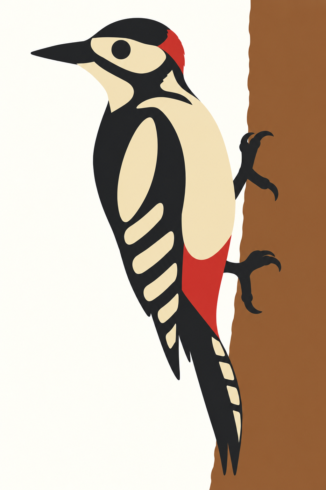
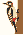

Produktionsansicht mit Motivspoiler. Technische Zertifizierung, Motivqualität und redaktionelle Freigabe sind getrennt. Motiv-/Spielabnahme: offen.
Quelle: buntspecht-ma-r03 · Datei: MA-r03.png
Original SHA-256: e06f9e36bbfee6f529c1a06453bec35f43a6074581ff0c3164daf76653f0841a
Normalisiert SHA-256: d08cee9fcd605fae6ded4455edb2343f5ce4986cc01be2bf0c423ecce2f810c4

{'alpha_below': 128, 'background': '#fffdf5', 'briefing': 'Faithful abstraction: left-facing climbing great spotted woodpecker beside right-hand brown trunk. Preserve head pattern, shoulder patch, red nape/undertail, beak, two grasping feet and stiff tail; simplify details, do not add motifs. See brief.md and parameterkorridor.json.', 'crop': [0, 0, 1024, 1536], 'fit': 'contain', 'format': 'picross-image-design-v1', 'height': 35, 'mode': 'color', 'origin': 'MA-r03.png, native targeted head correction derived from approved A-r01 and MA-r02, explicitly approved in motif-approval-MA-r03.json; puzzle pz-9a79befc7a834e2d9d5896a477328962', 'palette': [{'id': 'dark', 'rgb': '#242629'}, {'id': 'ivory', 'rgb': '#f0dfb7'}, {'id': 'red', 'rgb': '#cf3632'}, {'id': 'wood', 'rgb': '#996438'}], 'rights': 'Native im Nutzerauftrag erzeugte Projektillustration ohne externe Bildreferenz oder übernommene Fremdassets; ursprüngliche PNG-Bytes erhalten. Keine Exklusivität zugesichert.', 'source_id': 'buntspecht-ma-r03', 'variants': [{'id': 'area', 'method': 'area', 'threshold': 128}], 'width': 23, 'working_mode': 'faithful'}
{'format': 'PNG', 'source_size': [1024, 1536], 'source_mode': 'RGB', 'orientation': 1, 'normalized_size': [1024, 1536], 'color_treatment': 'untagged/sRGB RGB or gray interpreted as sRGB', 'icc_sha256': None, 'alpha': 'preserved, composited against design background only during rasterization'}
{'tool': 'rp3-image-1', 'pillow': '12.3.0', 'jpeg': '8.0', 'jpeg_turbo': '3.1.4.1', 'littlecms': '2.19', 'zlib': '1.3.1.zlib-ng'}
{'status': 'solved', 'proof_verified': True, 'certified': True, 'logic_hash': 'e19f2e56d403c3a570529e531e204888dcc35ef07753f4f39b3feddb3cde5454', 'profile': {'id': 'full-line-color', 'version': 1, 'start': 'unknown', 'deduction': 'all-line-supported-values', 'search': False}, 'profile_hash': 'f63ee6c88e6baa9f6a22f386ae532482d7ffb7b9a2237867f0d7cd9960ab608f', 'steps': 134, 'line_evaluations': 192, 'elapsed_seconds': 0.09048830000028829}
Kandidat: e6f3614337915c54ae182af90a69061d8b3c34c315241b4ebafcc043a0a2cd43
{'id': 'area', 'method': 'area', 'threshold': 128}

| Linie | Vollständige Hinweise (Länge:Farb-ID) |
|---|---|
| 1 | 1:ivory 5:wood |
| 2 | 1:ivory 3:wood 1:ivory 1:ivory 5:wood |
| 3 | 1:ivory 1:wood 4:dark 1:ivory 1:ivory 5:wood |
| 4 | 1:ivory 1:wood 2:dark 1:wood 1:ivory 1:dark 2:ivory 1:wood 1:red 1:ivory 5:wood |
| 5 | 2:ivory 3:wood 2:ivory 2:wood 1:ivory 5:wood |
| 6 | 1:ivory 1:wood 2:dark 2:wood 1:ivory 5:wood |
| 7 | 1:ivory 1:wood 1:dark 2:wood 1:ivory 1:ivory 5:wood |
| 8 | 1:ivory 1:wood 1:dark 1:wood 4:ivory 1:ivory 5:wood |
| 9 | 3:dark 1:ivory 1:dark 3:ivory 1:ivory 5:wood |
| 10 | 1:ivory 2:dark 1:wood 1:ivory 1:dark 1:wood 3:ivory 1:wood 1:dark 4:wood |
| 11 | 1:ivory 2:dark 2:ivory 2:dark 3:ivory 1:dark 5:wood |
| 12 | 1:ivory 1:dark 1:wood 2:ivory 2:dark 3:ivory 1:dark 5:wood |
| 13 | 1:ivory 1:dark 1:wood 2:ivory 2:dark 3:ivory 1:wood 2:dark 4:wood |
| 14 | 1:dark 2:ivory 1:wood 2:dark 4:ivory 6:wood |
| 15 | 2:wood 1:ivory 2:wood 1:dark 4:ivory 6:wood |
| 16 | 1:ivory 1:dark 1:wood 1:ivory 2:dark 3:ivory 6:wood |
| 17 | 1:wood 1:ivory 1:dark 2:wood 4:ivory 6:wood |
| 18 | 1:wood 1:dark 2:ivory 1:dark 2:ivory 1:wood 1:ivory 1:wood 1:dark 4:wood |
| 19 | 1:ivory 2:wood 1:dark 1:wood 3:red 1:wood 2:dark 4:wood |
| 20 | 1:dark 1:wood 1:ivory 1:wood 2:red 1:wood 1:ivory 1:dark 5:wood |
| 21 | 2:ivory 2:wood 2:red 2:ivory 1:dark 5:wood |
| 22 | 1:dark 2:wood 1:dark 1:red 2:ivory 6:wood |
| 23 | 1:wood 3:dark 1:ivory 7:wood |
| 24 | 2:wood 2:dark 1:ivory 7:wood |
| 25 | 1:ivory 1:wood 2:dark 8:wood |
| 26 | 1:wood 1:ivory 1:dark 8:wood |
| 27 | 2:dark 7:wood |
| 28 | 1:wood 1:dark 1:ivory 6:wood |
| 29 | 1:ivory 1:dark 7:wood |
| 30 | 1:dark 7:wood |
| 31 | 1:wood 1:dark 6:wood |
| 32 | 1:wood 1:dark 6:wood |
| 33 | 8:wood |
| 34 | 1:ivory 8:wood |
| 35 | – |
| Linie | Vollständige Hinweise (Länge:Farb-ID) |
|---|---|
| 1 | – |
| 2 | – |
| 3 | 1:ivory |
| 4 | 1:wood |
| 5 | 1:dark 1:ivory |
| 6 | 1:dark 1:ivory |
| 7 | 1:ivory 2:wood 4:ivory |
| 8 | 1:ivory 1:wood 1:ivory 1:wood 1:ivory 1:ivory 6:dark 1:wood 1:ivory |
| 9 | 1:wood 2:dark 2:wood 1:ivory 1:wood 3:dark 2:wood 1:ivory 1:wood 1:dark 2:wood 1:ivory |
| 10 | 1:wood 1:dark 2:ivory 1:dark 1:wood 2:dark 1:wood 5:ivory 1:wood 1:ivory 1:dark 1:wood 1:dark 1:ivory |
| 11 | 1:wood 1:dark 2:ivory 2:dark 1:wood 5:ivory 2:wood 1:ivory 1:dark 1:ivory 2:wood 1:ivory 1:dark |
| 12 | 1:ivory 1:dark 4:wood 1:ivory 6:dark 1:wood 1:dark 1:wood 1:ivory 1:dark 1:ivory 4:wood 1:ivory |
| 13 | 1:ivory 1:red 3:wood 2:ivory 1:wood 6:dark 1:wood 1:dark 4:wood 1:dark 3:wood |
| 14 | 12:ivory 3:red 4:dark 1:ivory |
| 15 | 11:ivory 4:red 5:dark 1:wood 1:ivory 1:ivory |
| 16 | 8:ivory 1:wood 1:red 1:wood 4:ivory 2:wood 4:dark 4:wood |
| 17 | 1:wood 2:ivory 2:ivory 1:wood 3:ivory 5:wood 1:ivory 2:wood 2:dark 2:wood |
| 18 | 9:ivory 1:wood 3:dark 5:wood 3:dark 13:wood |
| 19 | 9:wood 1:dark 2:wood 1:dark 4:wood 2:dark 15:wood |
| 20 | 34:wood |
| 21 | 34:wood |
| 22 | 34:wood |
| 23 | 34:wood |